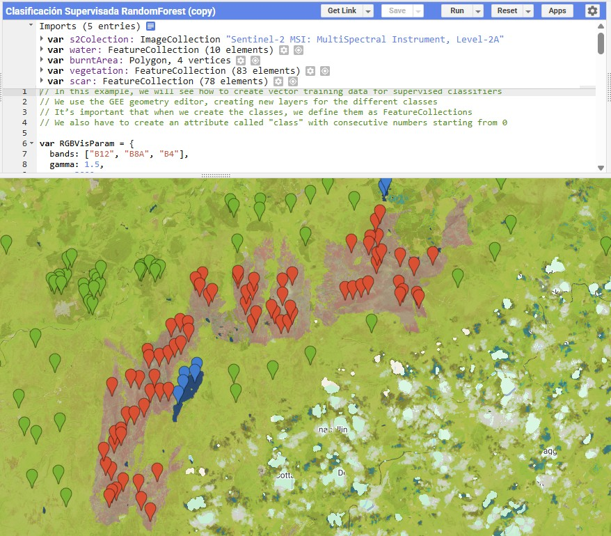
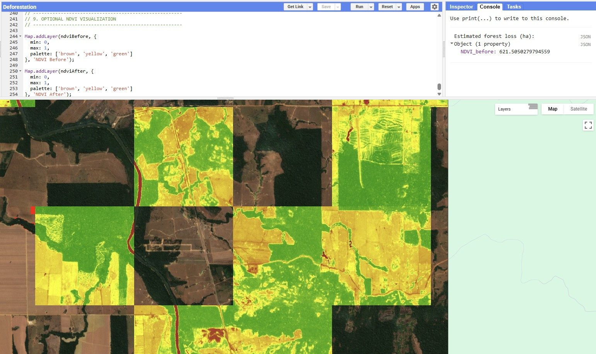
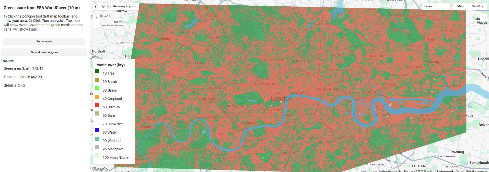
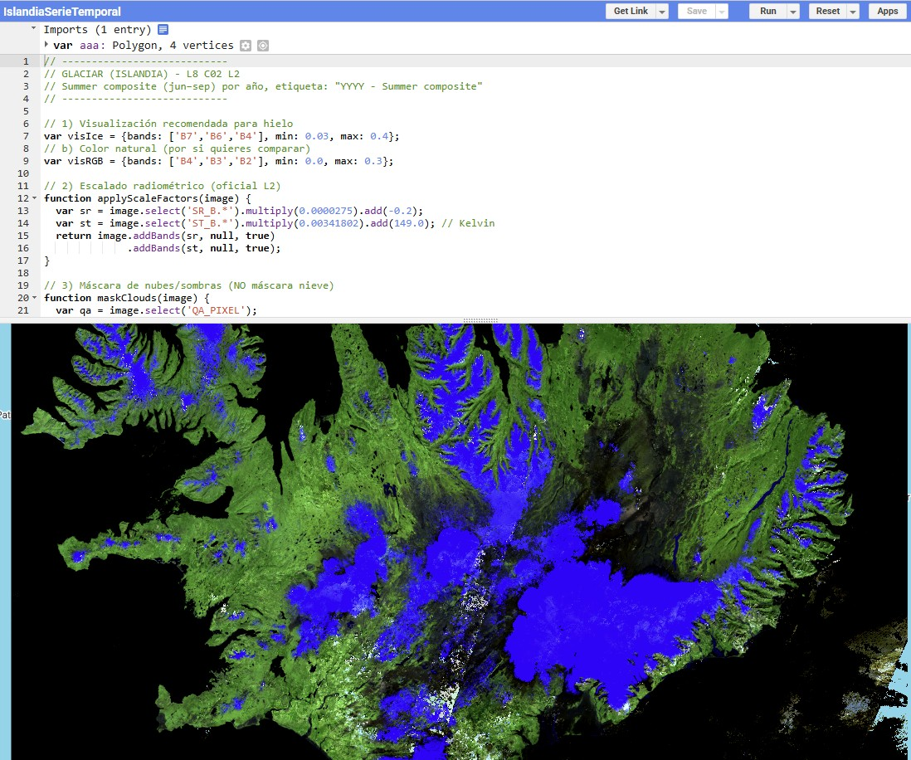
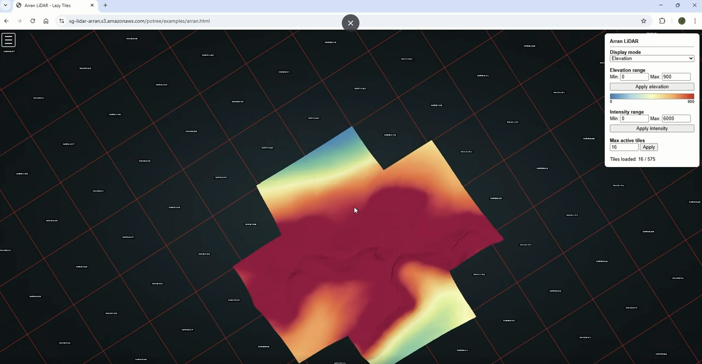
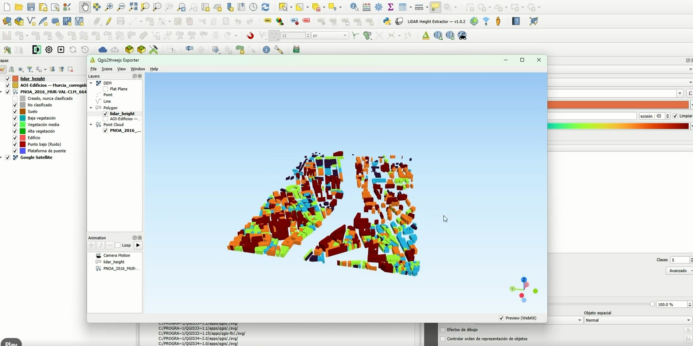
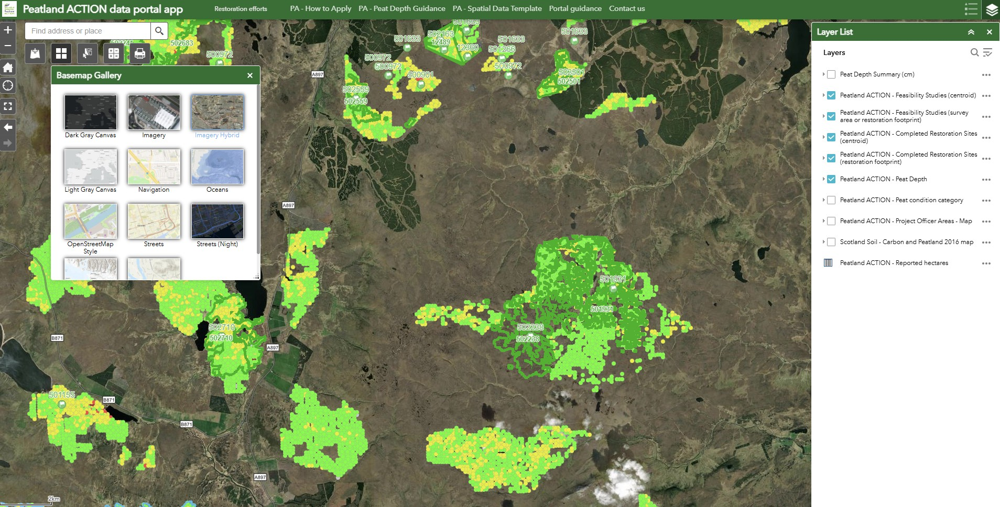
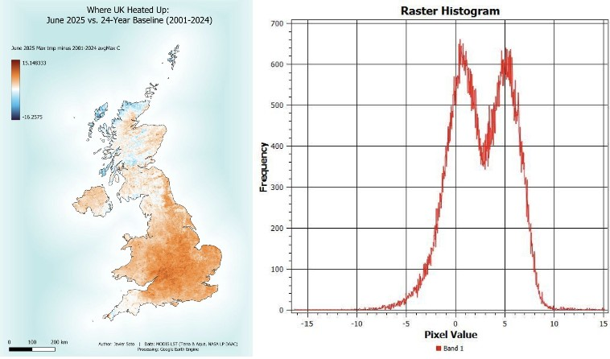
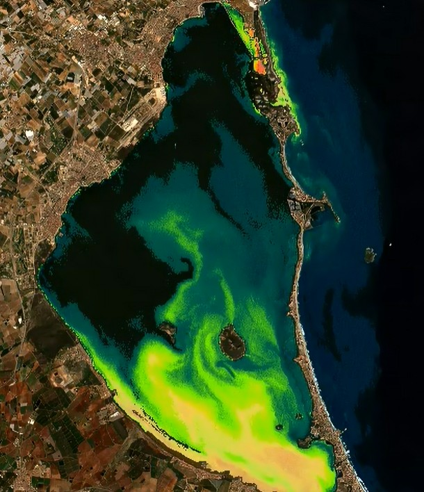
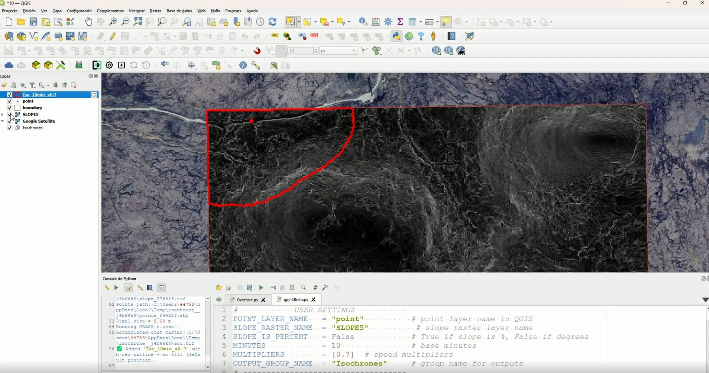

Earth Observation: Supervised classification to calculate burned area
Supervised classification using Random Forest to estimate burned area.
Selected projects and publications focused on Earth Observation, advanced spatial analysis and GIS infrastructure deployment. Here you will find everything from 3D visualization and point cloud experiments to reproducible Google Earth Engine workflows and web publishing tools (Potree, S3, responsive viewers).

Supervised classification using Random Forest to estimate burned area.

Script and tool in Earth Engine to detect forest loss in the Amazon.

Estimation of urban green area from spectral indices in Earth Engine.

Time series focused on ice evolution in Iceland using Earth Engine.

Series of experimental maps created as part of a mapping challenge.

3D web visualization based on geospatial data and static HTML.

Map or viewer related to WBS, spatial analysis or web publishing.

Thermal analysis of the United Kingdom in June 2025 compared to the 2001–2024 baseline.

Cartographic exploration about capturing and representing cells on maps.

Calculation of travel cost in peatland areas using accessibility models.